Аня открывает «Компас», чтобы найти перенесённую пару, подготовиться к экзамену и получить
справку для банка. Расписание показывает время и аудиторию. В разделе «Учёба» видно, сколько
нужно набрать на экзамене для оценки «удовлетворительно». По номеру заявки Аня следит за
справкой, пока сотрудник готовит документ.
Демонстрация, 1 мин 27 с. Запись локального прототипа от 18 ноября с русскими титрами
входит в комплект: docs/submission/kompas-demo.mp4.
Пройдите путь Ани и Елены
1. Найдите пару. На странице /jury откройте вход и выберите «Войти
как Аня». На главной откройте «Все пары». В расписании найдите изменённое занятие и его
аудиторию. Поздним вечером главная уже показывает завтрашнюю пару.
2. Закажите справку. Выберите «Заявки» → «Заказать: справка об обучении» → «В
банк» → «Отправить». На подтверждении сверьте назначение «В банк» и запомните
присвоенный номер.
3. Выдайте и получите. Войдите как Елена в другом браузере или на втором
устройстве. Если Аня вошла в обычном окне, подойдёт и приватное окно. Найдите заявку по
номеру, возьмите в работу и отметьте готовой. Вернитесь в исходный браузер Ани, откройте
карточку и скачайте PDF.
4. Возьмите с собой без сети. Под Аней заранее откройте «Сегодня» и «Документы»,
скачайте справку. Отключите сеть, вернитесь к документу, затем восстановите соединение.
Только после этой проверки переходите к профилю Максима.
Вечерняя главная Ани, 18 ноября. Ширина 360 px, данные вымышлены.
Конкурсный концепт с вымышленными данными. Версия материалов от 19 ноября 2026 года.
Публичный адрес стенда и доступ к исходникам указываются капитаном в комментарии к работе
при подаче.
ИЗ ЖУРНАЛА РАЗРАБОТКИ / ПРОВЕРКА РЕШЕНИЯ
Как ИИ помог сократить заказ справки с семи касаний до четырёх
Человек уже вошёл в кабинет и хочет получить электронную справку об обучении для банка. Цель
команды — отправить заказ с главной за четыре касания.
Что поручили оценщикам
«Каждый работает через Playwright MCP по живому стенду на 360 и 1440 и не видит отчёты
других. Сведи результаты: нарушение → эвристика → серьёзность 0–4 → скриншот».
Это выдержка из промпта C11. Три роли проверяли удобство, выполнение задач и доступность. Во
втором раунде агент, проходивший путь студента, зафиксировал семь касаний и назвал лишние
шаги. Исходный отчёт сохранился вместе с замечанием П‑1.
Предыдущая версия формы.
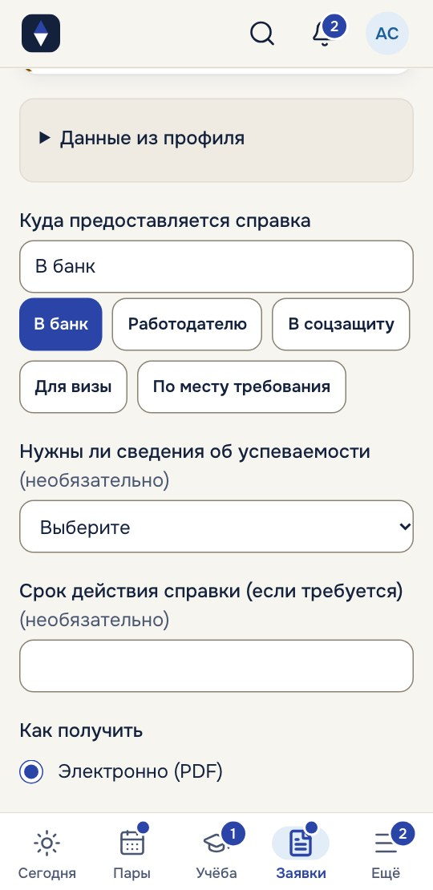
В итоговой форме достаточно выбрать «В банк».
Что изменили
Прямую ссылку на частую справку вынесли в раздел «Заявки». Электронный PDF и один
экземпляр выбраны заранее. Повторное подтверждение известных данных убрали. Получатель
выбирается одной кнопкой.
Как приняли результат
Браузерный тест начинает на «Сегодня», считает четыре действия и проверяет подтверждение
отправки. Вход, чтение формы и время работы деканата в число касаний не входят.
Проверяемый след в исходниках
docs/PHASE-C-PROMPTS.md (C11) →
docs/qa/he-round2-walkthrough.md (П‑1) → правка a00252f →
tests/e2e/student-requests.spec.ts («заказ справки … за 4 касания»). Семь
действий записал ИИ-оценщик. Четыре проверяет автоматический сценарий. Секундомер с
реальными студентами здесь не применялся.
2. Какую проблему решает Компас и почему эти разделы
Задание: личный кабинет студента, который заменяет россыпь вузовских систем одним понятным
входом. Обязательное ядро: вход и профиль, расписание на сегодня и неделю с переносами,
оценки и сессия, заказ справки с видимым статусом, объявления деканата, напоминания о
дедлайнах. Сквозные сценарии показывают расписание, учёбу, выдачу справки и ленту.
Первое знакомство и проверка напоминаний показывают, какие
решения изменились после испытаний.
2.1. Что говорят исследования
Фрагментация. В исследовании личного кабинета студента РАНХиГС (Alfa Research
Center, 2026; 32 участника, 16 знакомых с кабинетом и 16 новичков, айтрекинг) сравнили
кабинеты шести российских вузов: чаще всего «кабинет» это набор несвязанных систем с
отдельными входами. В одном вузе встроенное расписание было настолько неудобным, что
студенты написали своё приложение и пользовались им [R1]. В ВШЭ функции
разнесены между LMS, SmartLMS, РУЗ и приложением HSE App X, и студенческая работа «HSE
Grades» прямо называет это проблемой [R2]. Похожие жалобы есть у
University of St Andrews [R3], UniFatecie [R4] и
University of Ibadan [R4b].
Частота важнее редкой сложности. Расписание смотрят каждый день, оплату раз в
семестр. Мелкая ежедневная проблема портит опыт сильнее редкой серьёзной
[R1]. Поэтому «Сегодня» и расписание получили максимум внимания.
Главная, которую не используют. У РАНХиГС все ключевые сценарии вынесли на главную,
но студенты ею не пользовались: функционал ниже первого экрана, взгляд остаётся в верхней
трети [R1]. Наш вывод: на главной не плитки сервисов, а ответ на вопрос
«что сейчас», и он помещается в первый экран 360×740.
Привычка маскирует проблемы. Свои студенты привыкают и перестают замечать сложности
[R1]. Поэтому экспертную проверку мы вели «глазами новичка» (когнитивный
проход, раздел 9).
Удобство и доверие к данным связаны (UFES, Бразилия, r ≈ 0,7)
[R4c].
2.2. Данные опросов студентов (собственный опрос не проводился)
Мы не проводили собственный опрос однокурсников и не придумывали ответы. Это решение
команды (SPEC §3.1a, приложение F): сфабрикованные данные недопустимы. Задание формулирует
пункт условно («если спрашивали однокурсников»). Вместо опроса мы опираемся на три
опубликованных источника ниже и указываем авторов. Данные чужих команд используются как
вторичные и только как направление, не как доказательство.
Источник и авторство
Выборка
Что берём
Национальный опрос «Образовательная среда будущего: взгляд студентов». Авторы: КА
«Университеты и маркетинг» и ГК IPR, февраль–март 2026 [R41]
n = 6 820, 48 вузов
97% пользуются сайтом и ЛК вуза; NPS сайта и ЛК около 10% (пользуются вынужденно); самый
низкий параметр среды: гибкость (6,79 из 10); стабильность и поддержка 6,90 из 10;
нестабильность платформ среди главных проблем у 21,94%; разрозненность ресурсов называют
прямо 15,48%; личная переписка с преподавателями в мессенджерах любимый канал (62,98%);
рекомендация авторов: пульс-опросы каждый семестр.
Опрос студентов МГИМО, опубликованный командой eth0-png (репозиторий
eth0-png/digital-dean, папка research), 5–8 ноября 2026
[R39]
n = 24 (распространялся через чаты курсов; 12 из 24 учатся на 3-м курсе)
На вопрос о телефоне ответили 23 человека. Расписание выбрали 20, оценки — 16, справки —
12. Ближайшую пару и аудиторию хотят видеть на главной 14 из 24. Из 17 студентов,
обращавшихся в деканат или нуждавшихся в документе, 11 требовалась справка. 10 из 17
сообщили, что их вопрос решился после личного визита.
Исследование ЛК РАНХиГС, Alfa Research Center, 2026 [R1]
n = 32, айтрекинг и анализ эмоций
Пять ключевых сценариев (расписание, успеваемость, справка, уведомления, оплата);
приоритет по частоте; неиспользуемая главная; эффект привыкания.
Опрос студентов МГИМО проводили авторы другого проекта. В нём 24 добровольных участника, 12
с третьего курса. Вопросы можно было пропускать, поэтому у показателей разные знаменатели.
Опубликованные ответы задают приоритеты для прототипа. Перенос результата на весь вуз и
эффект нашего решения требуют отдельного исследования.
Что проверять на студенте. Покажите ему вечернюю главную и попросите найти новое
время перенесённой пары. Затем попросите объяснить смысл «87%» в учёбе и самостоятельно
заказать справку. Запишите первый путь, подсказки и результат. В демопримере 87% — это 43,5
из оставшихся 50 баллов, которые нужны для целевой оценки. Протокол и критерии успеха — в
docs/submission/product-rationale.md.
2.3. Какие ставки мы сделали и откуда они
Решение в продукте
На чём основано
«Сегодня» показывает ближайшую пару или завтрашнее начало дня. В «Все пары» видно
изменение за текущий день
[R1] главная без плиток; [R39] ближайшая пара
первой (14 из 24)
Офлайн: расписание, справки и очередь действий работают без сети (PWA)
Нестабильность платформ отметили 21,94% в национальном опросе [R41].
Расписание с телефона важно для 20 из 23 ответивших на этот вопрос в опросе МГИМО
[R39].
Справка как «посылка»: трекер статусов, PDF с QR-проверкой подлинности
В малом опросе справка — частый повод идти в деканат [R39];
прозрачность хода работы повышает воспринимаемую ценность [R6]
«Что делать, чтобы дотянуть до 5/зачёта»: понятный статус семестра вместо таблицы
Запрос студентов St Andrews на визуализацию оценивания и калькулятор
[R3]; шкала «98 / Отлично / A» как в настоящем ЛК МГИМО
[R39]
Дайджест уведомлений + срочные сразу, свои окна
Гибкость самый низкий параметр среды, 6,79 из 10 [R41]
Кнопка «Нашли ошибку в данных?» (заявка типа «исправить данные»)
Проектное решение команды. Проверяем, удаётся ли студенту передать ошибку сотруднику
прямо из карточки.
Быстрые обращения с ответом в одном месте, контакты и часы консультаций в карточке пары
Личную переписку с преподавателями в мессенджерах предпочитают 62,98% участников
национального опроса [R41].
Без него статус заявки нечем демонстрировать; требование задания к ядру
Что мы сознательно не делали: подключение к настоящим системам вуза, настоящий вход через
вузовскую учётную запись, оплата обучения. Помощник «Спросить Компас» есть, но по умолчанию
выключен (раздел 4.5).
3. Полный перечень ИИ-инструментов, IDE и сервисов
Перечень составлен по SPEC §12.7 и журналу docs/ai-log/. «Использовано»
отмечено только там, где следы остались в репозитории.
Фундамент (A1–A4), оболочка и дизайн-система (C2), PWA и офлайн (C7), экспертная оценка
(C11), правка ТЗ до 1.3
Разработка
Да, docs/ai-log/
Claude Code, Claude Sonnet 5.5
Экраны и серверная часть по этапам C1, C3–C6, C8–C10, C12
Разработка
Да
GLM 5.3 Flash в OpenCode
23 бэкенд-тикета по контрактам: чистые функции, эндпоинты, сид-данные, черновики
справочника
Фаза B
Да, docs/ai-log/models.md
Субагенты Claude Code (.claude/agents)
security-auditor, a11y-auditor, spec-reviewer,
ux-copy-editor; три независимых оценщика удобства в C11
Проверка
Да (не во всех сессиях, см. PROGRESS-C)
Codex, параллельные агенты
Проверка конкурсных доказательств, сверка первоисточников, испытания локальной сборки,
редактура и визуальная проверка материалов
Аудит 18.11
docs/ai-log/2026-11-18.md
Playwright + axe-core
E2E на 360×740 и 1440×900, доступность, скриншоты экранов (pnpm shots)
Проверка
Да
MCP: Playwright, shadcn, Context7
Браузер для агента, компоненты, актуальная документация библиотек
Разработка, проверка
Подключены; в части сессий Playwright MCP был недоступен, тогда использовали скрипты
Playwright
Lighthouse 13.6.0
Производительность, доступность, лучшие практики (локально)
Проверка
Да, docs/process/lighthouse/SUMMARY.md
gitleaks 8.30
Поиск секретов: pre-commit и CI
Проверка
Да, чистый прогон по истории (раздел 9)
YandexGPT / GigaChat
Модель для помощника в продукте
Продукт
Нет. Ключа не было, помощник работает детерминированно по справочнику, флаг
выключен
Skill frontend-design
Был предписан в C2
Дизайн
Нет: в сессиях был недоступен (PROGRESS-C, C2)
Библиотеки и лицензии: все сторонние пакеты, шрифты и иконки в
LICENSES.md (MIT, ISC, Apache-2.0, BSD, OFL; одно обоснованное исключение:
драйвер postgres под Unlicense). Стек: Next.js 16, React 19, PostgreSQL
16 с политиками RLS, Drizzle ORM, Better Auth (Argon2id), Tailwind 4 + shadcn/Radix, Serwist
(service worker), Vitest, Playwright.
Дизайн и контент с ИИ. Дизайн-система «Бумага и чернила» (токены цвета и типографики,
светлая и тёмная тема, проверка контраста скриптом scripts/check-contrast.ts),
знак «Компас» (SVG), иконки PWA (scripts/make-icons.tsx), вымышленные данные
сида (db/seed, ФИО фоновой популяции генерирует библиотека faker с русской
локалью), 25 статей справочника и тексты интерфейса сделаны с Claude Code; тексты
прогонялись через агента ux-copy-editor по глоссарию SPEC §7.6. Макетов из
графических редакторов в репозитории нет: дизайн описан в спецификации (§7) и воплощался
сразу в коде, проверка шла по скриншотам (раздел 5). Иллюстраций онбординга (три штуки) в
продукте нет, вместо них иконки (PROGRESS-C, C3.5).
4. Процесс работы с ИИ
4.1. Общая схема: «сэндвич» из моделей
Чтобы снизить стоимость и риск, работу разделили по сложности (SPEC §12.8,
docs/DEEPSEEK-TASKS.md; файл назван по первоначально планировавшейся модели,
фактически использована GLM 5.3 Flash, решение D-005 в docs/DECISIONS.md).
Фаза
Модель
Что делала
Факт по журналу
A. Фундамент
Claude Opus 5.5
Каркас, схема БД и RLS, авторизация, слой доступа, контракты API, эталонный эндпоинт,
падающие тесты (TDD-контракт) для дешёвой модели, манифест безопасности
23 тикета DS-01…DS-42 по готовым тестам и контрактам; 1 тикет = 1 сессия; запреты на UI,
авторизацию, схему, тесты безопасности и зависимости зашиты в opencode.json
≈1 ч 40 мин суммарно (20:35–22:15, 8.11); 19 сессий и координатор
Этапы C0–C12, 8–16.11; время по этапам в orchestrator.md (C4 не записано)
Идея: архитектура, безопасность и UX (дорогие ошибки) остаются у сильной модели; однотипный
бэкенд по готовым тестам отдан дешёвой; результат дешёвой модели проверяет сильная. Приёмка
фазы B: 17 находок ревью (16 в коде GLM), все исправлены; после этого
verify:ds 564/564 и 231 тест безопасности зелёные
(docs/DECISIONS.md, D-006).
4.2. Как оцениваем экономию: методика и оговорки
Стоимость токенов и экономию мы не показываем, потому что данных нет. В
docs/ai-log/models.md столбцы «токены вход/выход» и «стоимость» не заполнены:
их должен был внести владелец из статистики OpenCode, это не сделано. Прежнюю оценку «по
числу сообщений» убрали, чтобы не выдавать догадку за факт. Сравнения «сколько стоило бы
только на Claude» у нас нет, поэтому утверждение «мы сэкономили N%» было бы выдумкой.
Что у нас есть фактически (по models.md и git log):
Время фазы B ≈1 ч 40 мин на 23 тикета при параллельных фоновых агентах; тесты с первой
попытки прошли у 5 из 7 первых юнит-тикетов, остальные требовали 2–5 попыток.
Больше одной попытки: DS-02, DS-10, DS-11, DS-17, DS-18, DS-30, DS-40.
Цена качества: 17 находок ревью Claude на коде дешёвой модели (13 из 26 записей GLM в
errors.md про безопасность). Это время и токены, которые надо вычесть из
«экономии». Подсчёта этих затрат мы не вели.
Про скорость вообще. Рандомизированное исследование METR (2025) показало, что опытные
разработчики с ИИ-инструментами в своих зрелых репозиториях выполняли задачи на 19% дольше,
хотя сами считали, что ускорились [R36]. Контрольного эксперимента «с ИИ и без ИИ» мы не
ставили, так что скорость разработки по сравнению с ручной работой мы не измеряли и не
утверждаем. Время этапов в журнале записано по факту сессий.
4.3. Документы для агентов
Файл
Роль
docs/SPEC.md
Источник истины: исследования, требования, критерии приёмки AC-…, матрица C-01…C-30,
дизайн-система, чек-лист сдачи. Перед каждой фичей агент читает её раздел и AC
CLAUDE.md
Команды, «неочевидные правила» (userId только из сессии, чужое это 404, доступ к БД
через репозитории, цвета только токенами, цели касания ≥ 44 px), подводные камни,
протокол фазы C
docs/PHASE-C-PROMPTS.md
Промпты этапов C1–C12 с обязательной самопроверкой (скриншоты 360/1440 в двух темах,
e2e, axe)
AGENTS.md, opencode.json
Правила для GLM 5.3 Flash (allowlist путей, запреты, обязательные пункты каждого
эндпоинта)
Правила, подгружаемые по пути файла: для src/app/api/** и
src/server/** один набор, для UI другой
.claude/settings.json + scripts/hooks
Хуки: перед записью файла сторож репозиториев (guard-repositories.mjs),
после записи проверка (post-edit.mjs), на остановке
stop.sh (типы, юнит-тесты и матрица изоляции; при красном возвращает агента
к работе); запрет чтения .env
.githooks/pre-commit + gitleaks
Секреты не попадают в коммиты; хук не обходится
docs/ai-log/, docs/DECISIONS.md
Журнал по дням, сводка ошибок, учёт моделей, прогресс фазы C, 19 решений D-001…D-019
Фрагмент .claude/rules/api.md (правила для кода серверной части):
- Первая строка обработчика: requireStudent(req) или requireStaff(req).
- userId/studentId для роли student: только из сессии. Значения из пути, query и тела игнорируются.
- Чужой или несуществующий ресурс: 404 NOT_FOUND, не 403.
- Доступ к БД: только через src/server/repositories, личные таблицы внутри withUserTx и с условием по владельцу.
- Новый эндпоинт регистрируется в tests/security/manifest.ts.
Фрагмент субагента security-auditor: «Для каждой находки: файл:строка, сценарий
атаки в одну строку, исправление. Без общих советов».
4.4. Ключевые промпты и результаты по этапам
Промпты ниже сокращены; полные формулировки: docs/PHASE-C-PROMPTS.md и записи
docs/ai-log/2026-11-*.md. Дата первой записи в журнале: 8 ноября 2026.
Этап
Промпт (сокращённо)
Результат
Спецификация (Claude, чат)
Исследовать задание, конкурентов и данные опросов; составить ТЗ с матрицей требований,
AC, дизайн-системой и планом
docs/SPEC.md v1.0 (8.11), правка до 1.3 (9.11, D-009); приложение F: «опрос
не проводим»
Каркас и инструменты, проверенные хуки, образ собирается (D-001). ИИ ошибся 5 раз
(например, поставил Base UI вместо Radix), поймано красными командами
A2 Данные и безопасность Opus 5.5 + security-auditor
«Схема Drizzle для всех таблиц + RLS; Better Auth (Argon2id, сессии и лимиты в БД);
обвязка API; эталонный эндпоинт с тестами; манифест безопасности и IDOR-матрица»
Основа изоляции данных (D-002). Аудитор нашёл открытые служебные пути Better Auth и
RLS-политику «любой сотрудник правит любое объявление»
A3–A4 Контракт для дешёвой модели
«Падающие юнит-тесты DS-01…07 по §4 и SPEC, падать только из-за отсутствия реализации;
праздники по официальному постановлению без выдуманных дат; раздельные базы; манифест
безопасности для DS-10…33 заранее»
265 красных тестов на заглушках как проверка, что тесты реально тестируют (D-003, D-004)
B. Тикеты GLM
«Один тикет за сессию из docs/DEEPSEEK-TASKS.md; не менять тесты, чтобы прошли; не
трогать UI, auth, схему»
«Прочитай SPEC §7 целиком. Токены «Бумага и чернила» в Tailwind 4 @theme (светлая и
тёмная тема, контраст AA проверить скриптом); компоненты §7.4; оболочка; витрина
/dev/ui. Самопроверка: скриншоты 360/1440 × светлая/тёмная, найди и исправь минимум 5
недочётов»
Токены, компоненты, оболочка, витрина; 10 недочётов, найденных на скриншотах (список в
PROGRESS-C), D-007
C4 Справки Sonnet 5.5
Заявка, трекер статусов, PDF справки с QR и водяным знаком «концепт», страница проверки
/verify, документы
Сквозной сценарий «студент подал, сотрудник выдал, PDF проверен по QR» (D-011, e2e)
C7 Офлайн Opus 5.5
«Serwist: precache оболочки, stale-while-revalidate с меткой «обновлено N мин назад»,
офлайн-очередь действий с идемпотентностью. Проверь через Playwright с
context.setOffline(true)… Опиши в логе, где ИИ ошибся с кешем»
Service worker, офлайн-оболочка из IndexedDB, очередь, выход без сети (D-014). ИИ
отправлял очередь от userId из IndexedDB без сверки с сессией; поймал security-auditor
C11 Оценка удобства Opus 5.5 + 3 субагента
«Три независимых субагента (эвристики Нильсена, когнитивный проход за Аню и Елену
Сергеевну, доступность) через Playwright на 360 и 1440, не видят отчёты друг друга.
Сведи, исправь серьёзность 3–4, раунд 2 на свежих, KLM до/после. Синтетические персоны
не выдавай за пользователей»
Раздел 9: 87 + 44 исходных находки, KLM по 5 задачам
Как агент обнаружил потерянную пару. В тикете DS-11 GLM 5.3 Flash реализовал
недельное расписание по исходной дате занятия. Затем записал пример, который обычный
демодень скрывал: занятие перенесли из соседней недели в открытую, а студент его не видит.
При приёмке выборку расширили на новое время. Теперь пара появляется в неделе, куда её
перенесли, а отметка о прежнем времени остаётся в исходной неделе. Проверяемый след —
docs/ds-questions/DS-11.md, решение 2, и строки выборки в
src/server/repositories/schedule.ts. Исправление сохранено в коммите
a43d6ca.
4.5. Проверка помощника до решения о включении
Для режима поиска по 25 статьям критерий — первой открывается ожидаемая статья. Все 30
примеров настройки пройдены. На 15 новых вопросах совпало 10 ответов. После разбора ошибок и
повторной настройки получилось 12/15 на тех же вопросах. Независимый результат первой
попытки — 10/15. Внешний ИИ-провайдер не подключён, помощник по умолчанию выключен. Примеры
и ответы этапа C9 — в docs/ai-log/eval-assistant.md. 18 ноября статью о
пересдаче привели в соответствие с формой заявления. Повтор на известных наборах дал 30/30 и
13/15. Вопрос о несданном зачёте теперь ведёт на статью о зачёте. Тогда же, 18 ноября,
отдельный оценщик заранее зафиксировал 16 новых вопросов и ожидаемых ответов. Совпало 9/16:
нужная статья была первой в 5 из 12 тематических случаев, все четыре вопроса вне тем
получили корректный ответ. По этим фразам поиск не настраивали. Результат относится к поиску
по справочнику. Помощник остаётся выключенным. Протокол —
docs/qa/assistant-check-2026-11-18.md.
5. Скриншоты ключевых шагов: от идеи до готового кабинета
На этих страницах показаны снимки действующего прототипа. Дневное расписание, архивные
версии и исходный набор из 172 PNG лежат в docs/process/shots/ и
docs/qa/shots/. Актуальные «Сегодня», «Учёба», объявление, форма справки и
очередь сняты в Chromium 18 ноября. Дизайн создавался сразу в коде по SPEC §7.
5.1. Готовый студенческий кабинет: «Сегодня»
На снимке вечер: «На сегодня всё», первая пара завтра в 09:30, срок эссе завтра в 23:59.
Днём здесь ближайшая пара, вечером — первая пара следующего учебного дня. Изменённое время
занятия и аудитория видны в «Все пары».
360×740, светлая тема
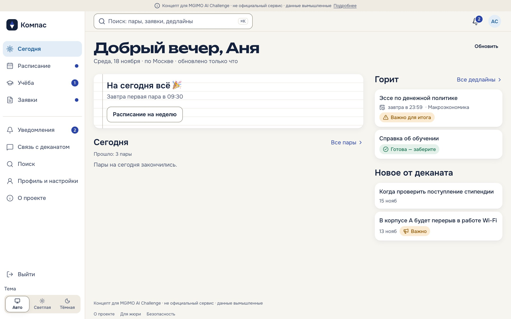
1440×900, светлая тема
360, тёмная
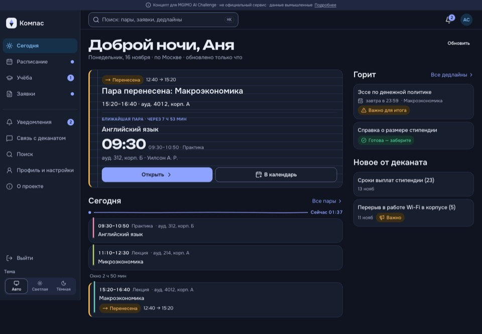
1440, тёмнаяВход, 360
5.2. Расписание и учёба
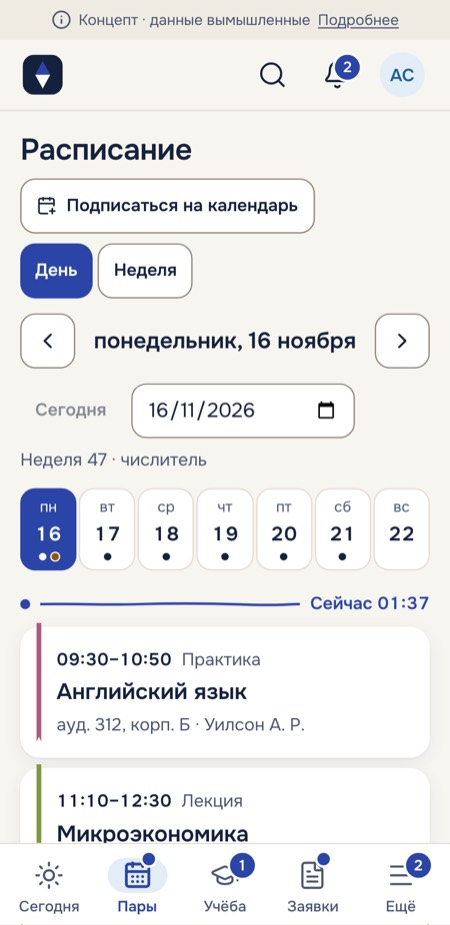
Расписание на день, 360
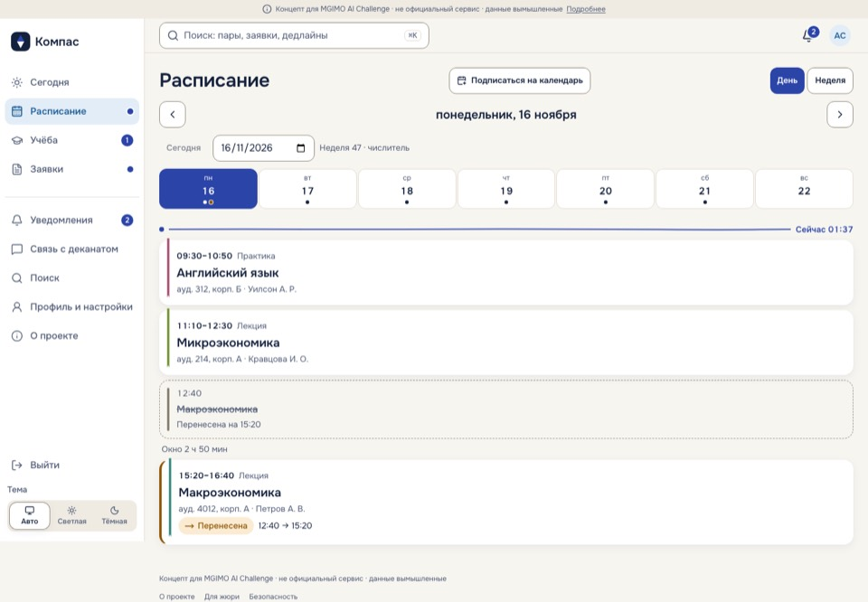
Расписание на день, 1440
Учёба: статус семестра, 360
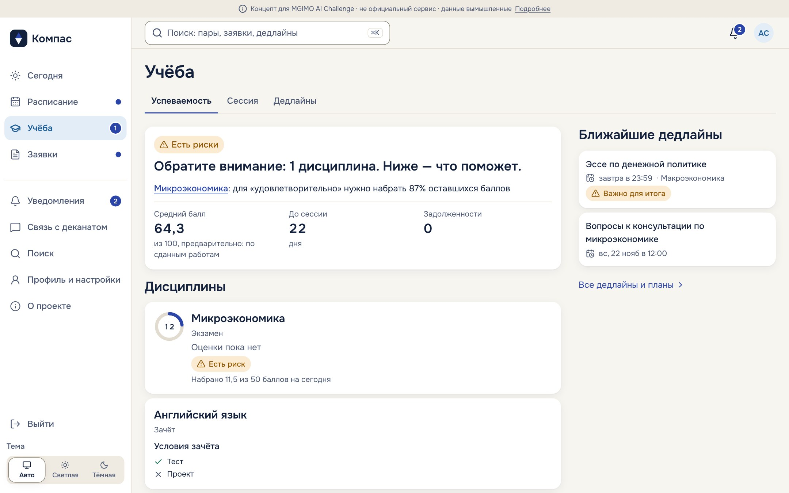
Учёба, 1440
5.3. От заказа до выдачи справки
Аня выбрала получателя «В банк», 360 px
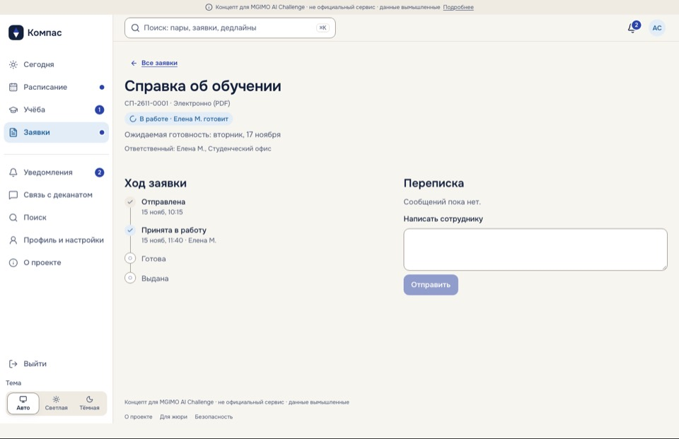
Карточка заявки со статусами, 1440
Очередь сотрудника, 360
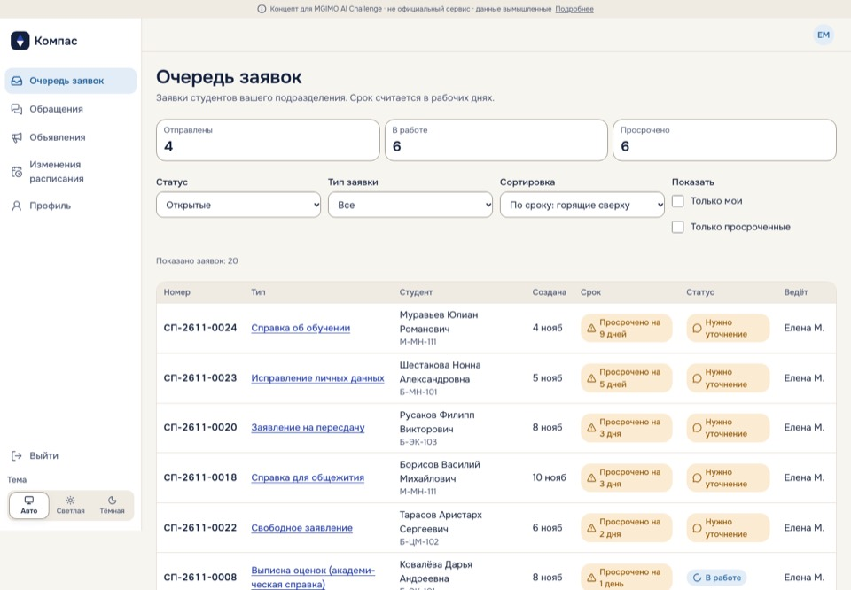
Очередь сотрудника, 1440
5.4. Без сети и после возвращения в кабинет
Аня открывает расписание в пути, когда соединение пропало. Уже сохранённые данные остаются
на устройстве. Для проверки надо заранее открыть страницы в той же учётной записи. 18 ноября
на локальном стенде автоматический сценарий также подтвердил однократную отправку отложенной
заявки после восстановления связи.
«Сегодня» без сети (офлайн-оболочка), 360
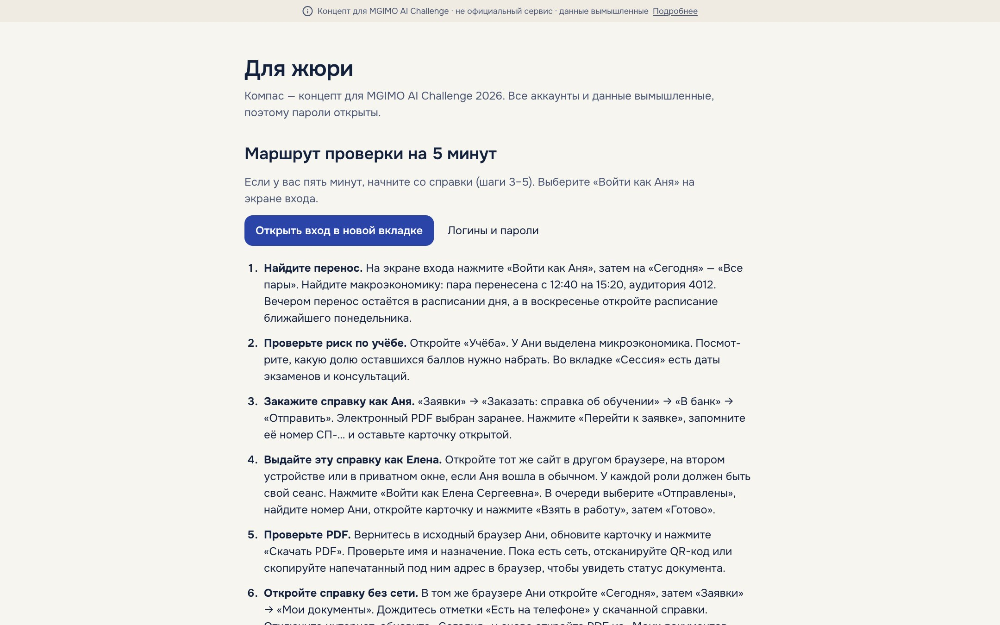
Страница «Для жюри», 19 ноября. Вход и инструкция для двух ролей, 1440 px
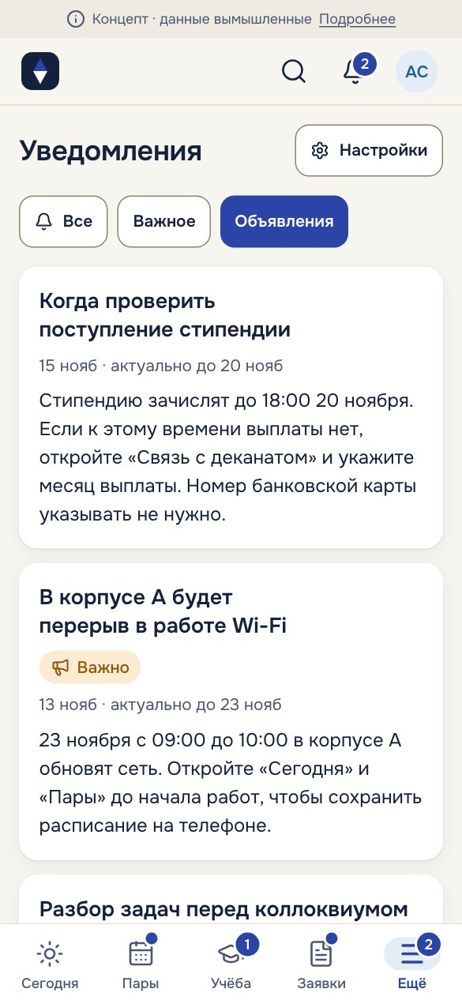
Объявления, ширина 390 px, 18 ноября.
Как ИИ отредактировал объявления
Поручение. «Вымышленные разнообразные сообщения со сроком/действием по теме без
фальшивых контактов, нумерации базы или нарушений видимости».
До правки у разных тем повторялась строка «Условный текст для демонстрации
концепта. Детали уточняются в студенческом офисе».
После правки студент видит часы отключения Wi-Fi и конкретное действие. «Откройте
„Сегодня“ и „Пары“ до начала работ, чтобы сохранить расписание на телефоне».
Как проверили. Агент открыл объявления на ширине 390 px. На снимке слева видны
перерыв 23 ноября с 09:00 до 10:00 и совет сохранить расписание. Шаблон —
db/seed/population.ts, запись решения —
docs/ai-log/2026-11-18.md.
5.5. Что изменилось после экспертной оценки
Скриншоты «до» сняты оценщиками раунда 1 (синтетическая оценка, раздел 9) на стенде
16.11.2026. Снимки «после» показывают принятые изменения. Форма с кнопкой «В банк» и очередь
с ожиданием ответа студента пересняты из локальной конкурсной сборки 18 ноября.
№
Было (серьёзность 3)
Стало
R1-03, R1-04
«Средний балл 23.8 · предварительно» без шкалы читается как провал; три разных ответа на
«сколько нужно до удовлетворительно»
Средний балл из 100, одна формула
needShare (src/lib/grading.ts), десятичная запятая
R1-05
Hero «Сегодня» показывает непросмотренный перенос крупнее ближайшей пары
Ближайшая пара всегда крупно; перенос выделен отдельной строкой
R1-02
Поиск не находит заявки и дедлайны, хотя подсказка обещает
Новые группы «Мои заявки» и «Дедлайны», только свои данные
R2-03
Заказ справки: 7 касаний при цели ≤ 4
4 касания (e2e считает касания)
ДО: «Учёба», средний балл 23.8 без шкалы, «больше 70%»ПОСЛЕ: средний балл из 100, один способ счётаДО: перенос крупнее ближайшей пары
ДО: форма справки, 7 касанийПОСЛЕ: частая справка и быстрые варианты
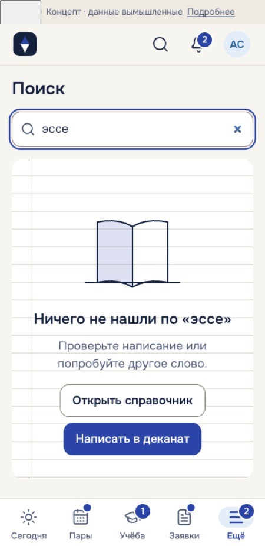
ДО: поиск не находит «эссе» и номера заявок
5.6. Какие варианты отложили или изменили
Мы не вели архив отвергнутых макетов, поэтому показываем только то, что зафиксировано в
решениях и отчётах:
Компоненты Base UI (shadcn init по умолчанию) заменены на Radix по
SPEC (A1). Первая версия кэша данных студента в localStorage заменена на
данные на устройстве в IndexedDB со стиранием при выходе (C3, C7), потому что устройство
может быть общим.
Полупрозрачная шапка и обрезка подписей в нижней панели (C2): убрано после
просмотра скриншотов 360 в тёмной теме.
В базе лежит не сам ключ входа, а его отпечаток (SHA-256): копия базы не даёт войти в
чужой кабинет.
src/server/auth/session-token-hash.ts
Подбор пароля
Не больше 5 попыток входа за 30 секунд с одного адреса и 20 неудачных в час на логин.
Демо-аккаунты из лимита по логину исключены, иначе жюри можно заблокировать (D-017).
src/server/auth/index.ts
Чужие данные
Студент видит только свои заявки, оценки и документы. Подмена адреса даёт «Не найдено»,
а не «Нет доступа», чтобы нельзя было узнать, существует ли чужая запись. Защита на трёх
уровнях: проверка в обработчике, условие владельца в репозитории, политики построчной
защиты (RLS) в PostgreSQL.
Студент не открывает кабинет сотрудника: страницы отвечают «Раздел для сотрудников»,
программный интерфейс отвечает 403. Сотрудник видит только свой факультет.
src/proxy.ts, tests/e2e/staff.spec.ts
Защита браузера
Разрешены только скрипты с одноразовой меткой (CSP с nonce), HSTS, запрет встраивания.
Сервер проверяет всё от браузера по строгим схемам (Zod); текст объявлений проходит
безопасный разбор, 11 векторов XSS в тестах.
tests/unit/markdown.test.tsx
Проверка справки по QR
Страница проверки не показывает ФИО и номер заявки, только факт выдачи; код подписан
секретом сервера; запросы ограничены по частоте.
src/app/verify
Секреты
Ключи только в переменных окружения; gitleaks на каждом коммите и по истории в CI;
.env агентам читать запрещено.
.githooks/pre-commit, .github/workflows/ci.yml
Выдержка из проверок изоляции
Матрица tests/security/manifest.ts перечисляет каждый маршрут API, и для
каждого проверяется: без входа 401, под чужой ролью отказ, чужой объект 404, свой 2xx. Новый
маршрут без записи в манифесте тесты не пропустят. На приёмке фазы B прошло 231 тест
безопасности (D-006); итоговый прогон см. раздел 9.
Примеры уязвимостей, найденных агентом-аудитором при ревью кода ИИ (всего 13 находок
по безопасности в коде GLM и 4 в коде Claude Opus в фазах A и B, полный список в разделе 8):
Объявления для «ЭК и 1 курс» видели первокурсники всех факультетов: аудитория считалась
как объединение критериев вместо пересечения (C1).
Сырой токен календарной подписки лежал в таблице кэша идемпотентности, хотя хранить его
решили только в виде хеша (C2).
Что мы не утверждаем. Независимого пентеста не было. Заголовки безопасности проверены
нашим тестом, но оценка внешнего сервиса (Mozilla Observatory) не получена, потому что сайт
ещё не развёрнут.
7. Этапы, сделанные вручную
Часть работы по замыслу выполняет человек, а не ИИ. Ниже статус по каждому шагу: что
подтверждено артефактами репозитория, а что на момент подготовки документа не сделано или не
подтверждено. Мы не пишем «сделано» там, где следов нет.
Шаг
Статус
Комментарий
Отбор источников и готовых модулей
Частично подтверждён
Список источников и конкурентов в SPEC (приложение A, §2.5); полные тексты исследований
по плану скачиваются вручную в docs/research/, этого каталога в репозитории
нет. Выбор библиотек и лицензий зафиксирован в LICENSES.md и D-001.
Решения по продукту и риску
Подтверждён
Решение не проводить опрос (приложение F), выбор дешёвой модели (D-005), что оставить за
флагом (помощник), что резать при нехватке времени.
Выбор хостинга, покупка домена, деплой
Не сделано
В сессиях агента не было сервера и домена (этап C10 «blocked: needs human»). Пакет и
чек-лист готовы: docs/deploy/CHECKLIST.md.
Проверка на настоящих устройствах и операторах
Не сделано
Все прогоны на эмуляции Playwright (360×740 и 1440×900). Установка PWA на настоящие
iPhone и Android, мобильные операторы без VPN, ручной импорт .ics в
календари не проверялись.
Внесение статистики токенов из OpenCode
Не сделано
Нужно для расчёта стоимости фазы B (раздел 4.2).
Финальная редактура текстов
Частично
Тексты интерфейса прошли агента ux-copy-editor по глоссарию. Последняя
читка человеком не отражена в репозитории.
Решение о включении ИИ-помощника на стенде
Ждёт человека
Флаг выключен; нужен ключ провайдера и согласие на отправку фрагментов справочника
наружу (D-016).
Загрузка документов участников в профиль конкурса, отправка работы
Ждёт человека
Не относится к репозиторию.
8. Работа с ошибками ИИ
Мы ведём сводную таблицу ошибок docs/ai-log/errors.md (по этапам A и B) и
раздел «Где ИИ ошибся» в журнале каждого дня (этапы C). Всего в сводке 35 записей: 26 в коде
GLM 5.3 Flash и 9 в работе Claude Opus 5.5.
Оговорка к сравнению моделей. Ошибки GLM записывали ревьюеры при приёмке каждого
тикета, а ошибки Claude в основном записывал сам Claude о себе, плюс то, что нашёл аудитор.
Поэтому нельзя делать вывод, что одна модель ошибается чаще другой: способ учёта разный.
Тип
Число
Примеры
Безопасность
17 (13 GLM, 4 Opus)
Статус 403 у rewrite в Next игнорируется (тест зелёный, рантайм отдавал 200); аудитория
объявлений как объединение вместо пересечения; сырой токен календаря в кэше; секрет
проверки справок по умолчанию «demo-secret» в production; гонки при смене статуса; RLS
разрешала любому сотруднику править любое объявление
Инструменты и конфигурация
10
Тест «запрещённый переход → исключение» был зелёным на заглушке; zsh не разбил строку на
слова, и проверка эталона шла по заглушкам; ключи идемпотентности с точкой не проходили
формат; ложное срабатывание gitleaks на тестовых заголовках
Тесты
4
Тест подставлял «чужую дисциплину» из данных самого студента; сортировка проверялась не
тем элементом
Даты и часовые пояса
3
60 * HOUR вместо порога в 60 минут; курсор очереди не совпадал с порядком
сортировки; выборка расписания по исходному времени теряла перенесённые пары
«Выдуманные» API библиотек
1
globSync из node:fs при типах Node 20; поймал tsc
Вёрстка 360 px и доступность
в журналах дней
Hero с двумя парами не влез в 360×740; кнопки без названия пары; потеря фокуса после
«Завершить сеанс»; ссылки в тексте без подчёркивания
Типичные ошибки этапов C (из журналов дней)
Этап
Что произошло
Как поймали
C2
Передал обработчик из серверного компонента в кнопку: витрина отдавала 500
Скриншоты 360/1440 (на снимке была английская заглушка Next)
C3
Кэш студента лёг в localStorage (общее устройство);
safeNext обходился символом табуляции
security-auditor по диффу
C4
ready падал 500 только в production: в dev
VERIFY_SECRET подменялся демо-секретом
e2e на standalone-сборке
C5
Справочник kb_articles с фазы B не заполнялся (поиск по нему был бы пуст)
Интеграционный тест поиска
C7
Офлайн-очередь уходила от имени userId из IndexedDB без сверки с сессией; вход
сотрудника не стирал данные студента
security-auditor
C8
Демо-сброс лежал в публичном маршруте с TRUNCATE всей БД, включая счётчики подбора
пароля
security-auditor
C9
В регулярках использовал \w, \b, которые в JavaScript не
понимают кириллицу: часть провокаций проходила, первый eval дал 15 из 20
Eval-прогон и контрольный набор
C10
docker compose run без -T (под cron нет TTY, пересев молча не
запустился бы); домен Caddy по умолчанию :80 ломал cookie
__Host-
security-auditor прочитал скрипты
C11
Перенос кнопок hero (flex-wrap) вытолкнул вторую пару под сгиб на 360 px;
хелпер e2e перетирал параллельный тест настроек
e2e AC-2.1 с замером; git stash показал красное и без правок
Что мы из этого вынесли: ИИ чаще всего ошибается на стыках (production против dev,
кириллица в регулярках, фоновые гонки, чужие данные в кэше). Помогли (1) тесты, написанные
до реализации, и проверка их на заглушках; (2) аудиторы на каждом изменении доступа к
данным; (3) скриншоты в двух ширинах и двух темах; (4) правила в CLAUDE.md и
хуках, в которые превращали повторявшиеся ошибки.
9. Результаты проверок
Аудит 18 ноября на локальной рабочей сборке. На ширинах 360 и 1440 px студент заказал
справку, сотрудник выдал её, а студент скачал читаемый PDF. Прошли 493 модульных теста, 20
отобранных интеграционных сценариев, 24 автоматические проверки axe (шесть экранов, две темы
и две ширины) и шесть проверок PWA. После возврата сети отложенная заявка была создана один
раз. Физические телефоны, скорость публичного сервера и время первого прохождения человеком
требуют отдельных наблюдений. История проверки базовой ревизии 8653f5d записана
в docs/ai-log/2026-11-18.md.
После редакции конкурсных материалов, 18 ноября. Шесть экранов проверены в светлой
теме на ширинах 360, 390, 768 и 1440 px. Во всех 24 сочетаниях контент поместился по ширине,
автоматическая проверка axe не обнаружила нарушений проверяемых правил WCAG A/AA. На ширине
390 px Аня получила PDF размером 20 545 байт. Без сети открылись те же байты. QR-код
прочитали с изображения страницы PDF. В локальном браузере без входа открылась проверка
документа со статусом «Действителен». В WebKit 27.2 по локальному HTTPS на ширинах 390 и
1440 px прошли путь от входа до формы справки «В банк», проверили перенос на 15:20 в
аудитории 4012 и порог 87% в учёбе. В 12 состояниях страницы поместились по ширине,
необработанных ошибок JavaScript не возникло. Физический iPhone в этом прогоне не
использовали. Подробности — docs/qa/contest-quality-check.md.
Предыдущие полные прогоны команды от 16 ноября 2026 года
зелёные: 1096 тестов в 47 файлах (прогон 16.11.2026)
pnpm verify
Изоляция данных и роли (IDOR, RLS, страницы /staff/*)
входит в прогон выше (проект security)
pnpm test:security
E2E на 360×740 и 1440×900
Полная выборка за 16 ноября отсутствует. Последний полный прогон с числом в
журнале: C9, 511 тестов (e2e вместе с axe), 7 пропущено; в C10–C11 e2e дописывались и
запускались по сценариям, ночью два теста зависели от тихих часов (D-018)
pnpm test:e2e
Доступность axe, обе темы
176 из 176 проверок без нарушений serious/critical, mobile-360 и desktop-1440,
светлая и тёмная темы (прогон 16.11.2026)
pnpm test:a11y
Сканер секретов gitleaks по всей истории
121 коммит, утечек не найдено (прогон 16.11.2026)
gitleaks git .
Eval помощника
30/30 на обучающих примерах. На 15 новых вопросах 10/15 до исправлений и 12/15 после
настройки на них
pnpm eval:assistant
9.1. Lighthouse (локально, production-сборка)
Lighthouse 13.6.0, мобильный профиль (Slow 4G), 127.0.0.1, страницы кабинета
под сеансом Ани. Это локальный замер, не боевой хост; замер сделан на этапе C10 до правок
C11. Сырые отчёты не хранились.
Страница
Perf
A11y
BP
SEO
LCP
CLS
/about
100
100
100
100
1,5 с
0
/login
100
100
100
100
1,5 с
0
/security
100
100
100
100
1,5 с
0,004
/jury
99
100
100
100
1,7 с
0,002
/requests
99
100
100
100
1,5 с
0,008
/schedule
92
100
100
100
1,5 с
0,16
/documents
84
100
100
100
4,2 с
0
/study
82
100
100
100
4,2 с
0,107
/today
76
100
100
100
5,1 с
0,09
Мобильные замеры 18 ноября. Для каждой страницы под Аней выполнили три локальных
запуска Lighthouse 13.6.0. «Сегодня» — 99/99/99 за производительность, медиана LCP 1,58 с,
CLS 0,059. «Учёба» — 82/82/83, LCP 4,22 с. «Документы» — 98/96/98, LCP 1,49 с. Доступность —
100 во всех девяти замерах. В этом замере медленнее всего открывался раздел «Учёба». Сырые
значения и окружение указаны в docs/qa/contest-quality-check.md и
docs/process/lighthouse/SUMMARY.md. Таблица выше относится к предыдущему этапу
C10.
9.2. Два раунда экспертной оценки к 16 ноября и модель KLM
Эта оценка синтетическая. Все отчёты написали ИИ-субагенты в ролях эксперта по
юзабилити, персон Ани и Елены Сергеевны и эксперта по доступности. Живых пользователей и
живых юзабилити-тестов не было. Персоны это модели из SPEC §4.4, а не участники
исследования. Результаты нельзя читать как «пользователи оценили»: это способ найти
нарушения без участников (SPEC §13.4, [R50]).
Метод: 10 эвристик Нильсена, когнитивный проход (вопросы В1–В4), ручная проверка WCAG
2.2 AA; три независимых оценщика в раунде, каждый в отдельном контексте браузера на 360 и
1440 через Playwright; серьёзность 0–4 по шкале NN/g. Затем сведение и исправление, потом
раунд 2 свежими оценщиками, которые не видели раунд 1.
Серьёзность
Раунд 1: найдено (после сведения)
Раунд 1: открыто после правок
Раунд 2: найдено
Раунд 2: открыто после правок
4, катастрофа
0
0
0
0
3, крупная
9
0
3
0
2, мелкая
29
26
17
16
1, косметика
25
22
14
14
0, не удобство
2
2
2
2
Всего
65 (из 87 исходных)
50
36 (из 44)
32
Оценщики раунда 2 не знали о раунде 1, поэтому сравнивать раунды как «прогресс на столько-то
процентов» нельзя: меняются и стенд, и оценщики. Серьёзность 3: 9, затем 3, и все исправлены
и покрыты тестами.
Цель (SPEC §13.5)
Факт
Итог
Q-HE-1: нарушений серьёзности 3–4 нет
0 открытых; раунд 3 свежими оценщиками не проводился
выполнена
Q-HE-2: серьёзности 2 не больше 3 с обоснованием
На 16 ноября открыто 16, обоснование записано для одного
не выполнена
Q-CW: нет провалов в ключевых сценариях
Провал З5: справочник не находится из меню (R2-14)
не выполнена
Q-KLM-1…3
см. таблицу ниже
выполнены
KLM «до» и «после»
Модельная оценка (Card, Moran, Newell; значения операторов K = 0,2 с, P = 1,1 с, M = 1,35 с
[R51]), не замер на людях. Путь «до» построен нами по качественному описанию настоящего ЛК
МГИМО [R39]: чисел о реальном кабинете в источниках нет, поэтому «до» это допущение. Путь
«после» — путь в версии «Компаса» на дату расчёта. Расчёт сделан для знакомого пути без
ошибок. Время первого знакомства со студентами ещё предстоит измерить.
Ноль касаний относится к дневной главной, когда карточка переноса уже видна. На вечернем
экране «На сегодня всё» для проверки прошедшей пары нужен переход «Все пары».
Задача
Касаний «до»
Время «до»
Касаний «после»
Время «после»
1. Где следующая пара
4
10,6 с
0
1,35 с
2. Заказать справку об обучении
9
21,0 с
4
9,25 с
3. Статус заявки и ответ на уточнение (+40 символов)
5
21,25 с
3
14,6 с
4. Виден ли перенос на дневной главной
4
10,6 с
0
1,35 с
5. Сколько баллов нужно до «удовлетворительно»
5
17,3 с
2
6,65 с
Подробности: docs/qa/heuristic-eval.md, docs/qa/klm.md, исходные
отчёты оценщиков и их скриншоты в docs/qa/.
9.3. Что не проверялось
Работа на боевом домене, доступность из РФ без VPN у трёх операторов, Mozilla Observatory,
Lighthouse по боевому адресу.
Установка PWA на настоящие iPhone и Android; импорт .ics в Google и Apple
Calendar вручную.
Сборка Docker-образа (на машине разработки нет buildx); проверен только синтаксис compose
и shell-скриптов.
Ответы ИИ-провайдера: ключа не было, проверялся только детерминированный режим помощника.
По состоянию на 19 ноября команда ещё не давала «Компас» студентам для самостоятельного
прохождения. Время выполнения, необходимость подсказок и самостоятельное завершение
заданий предстоит измерить с участниками. Задания и правила фиксации результатов приведены
в docs/submission/product-rationale.md.
9.4. Что проверили после изменений 19 ноября
В предыдущей версии инструкция предлагала переключить роль в обычной вкладке, а статью о
пересдаче было трудно найти через навигацию. Эти задачи отдали разным агентам, а проверку
изменений — отдельному рецензенту с локальной рабочей сборкой.
Как быстро появляется сводка «Учёбы»
Теперь первая сводка успеваемости приходит в HTML-ответе сервера. 19 ноября один и тот же
локальный стенд проверили до и после правки: кабинет Ани, Chromium 158, Lighthouse 13.6.0,
одинаковая мобильная эмуляция и три холодных запуска на версию.
Версия «Учёбы»
Производительность, три запуска
LCP, медиана
CLS, медиана
Доступность
Исходная, 95596a3
84 / 85 / 85
3,70 с
0,107
100
С первой сводкой в HTML
99 / 100 / 99
1,55 с
0,028
100
Медиана производительности выросла с 85 до 99. Крупнейший видимый элемент появлялся более
чем на две секунды раньше. Отдельный замер после исправления напоминаний дал 100 / 100 / 99,
медиану LCP 1,52 с и CLS 0,028. Все три оценки доступности — 100. Условия — в
docs/qa/reminder-acceptance.md. На публичном домене и физических телефонах
измерения ещё предстоят.
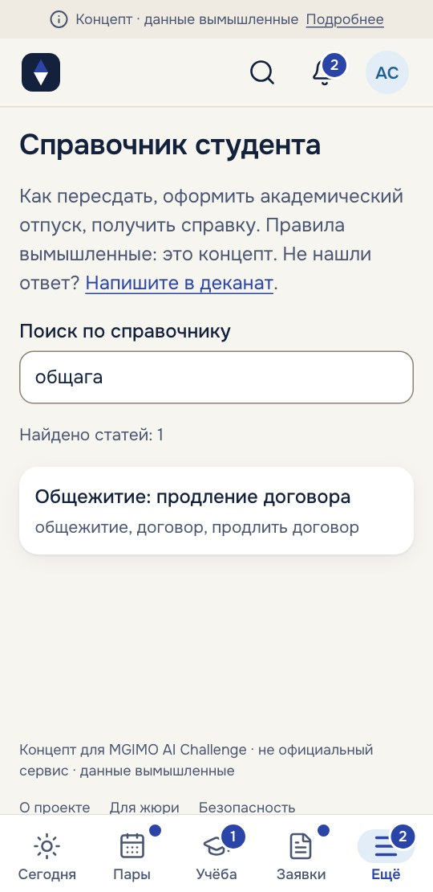
Справочник на экране 360 px, 19 ноября.
От вопроса к статье
Студент открывает «Справочник» через «Ещё» на телефоне или через навигацию на
компьютере. На двух ширинах, 360 и 1440 px, поиск «общага» показал статью «Общежитие:
продление договора». Рецензент открыл статью, проверил запрос «зачет» и вернул полный
список из 25 статей после пустого результата. «Справка для банка» ведёт к статье со
ссылкой на заказ, обязательным назначением и сроком подготовки в один рабочий день. По
запросу «продлить общагу» открывается статья со ссылкой на заказ справки для общежития.
Срок её подготовки — два рабочих дня.
Два сеанса для одной заявки
Эта же проверка подтвердила переход со страницы «Для жюри» на экран входа. Новая
инструкция ведёт Аню от заявки до офлайн-копии PDF. Елена готовит документ в отдельном
сеансе. Когда сотруднику нужно уточнение, студент видит вопрос рядом с полем ответа. В
проверке с Максимом и Еленой вопрос и ответ сохранились у обоих после подготовки
справки.
В плане занятия у Ани совпали время в форме и сохранённый интервал (14:00–15:30 МСК);
действие «Открою черновик» сохранилось после обновления. При шрифте 32 px «Учёба»,
справочник, инструкция жюри и профиль уместились по ширине 360 px. До правки профиль
раздвигался до 543 px. После правки двух статей повтор на известных наборах поиска дал 30/30
и 13/15. Протокол испытаний — docs/qa/ui-quality-2026-11-19.md. Решения команды
— docs/ai-log/2026-11-19.md.
9.5. Что изменило первое знакомство с «Компасом»
19 ноября независимый ИИ-проверяющий впервые открыл кабинет Ани версии 0f291de.
Он получил три задачи. Названия кнопок, ожидаемые результаты и маршрут жюри ему не
показывали. Он решил все три задачи без подсказок. По ходу возникли два вопроса. Какая пара
откроется? Где проверить, что справка заказана для банка?
Задача
Первый проход и решение команды
Куда идти на макроэкономику?
На дневной главной проверяющий увидел 15:20–16:40 и аудиторию 4012, но общая кнопка
«Открыть» вела на ближайшую микроэкономику. Теперь заголовок переноса ведёт на
макроэкономику, а у ближайшего занятия своя ссылка.
Как отличить справку для банка?
Заявка отправлена за четыре действия. При двух одинаковых названиях назначение
пропадало. Теперь «В банк» видно после отправки и в карточке. В списке у каждой заявки
есть номер и время подачи.
Откуда взялись 87 баллов?
Проверяющий объяснил расчёт. За предыдущие работы Аня получила 11,5 балла, экзамен весит
50%. Чтобы набрать 55, ей нужно получить 87 из 100 на экзамене.
Во внешнем исследовании РАНХиГС студенты искали справку в «Документах»
[R1]. В «Компасе» из этого раздела теперь можно и заказать справку, и
перейти от готового PDF к исходной заявке. В первой студенческой сессии проверим, сможет ли
участник по назначению найти свой заказ и открыть выданный документ.
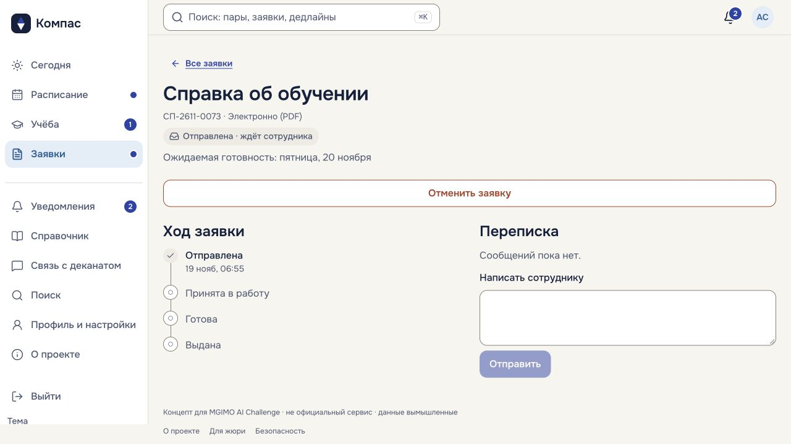
Первый проход. В карточке видно название справки и её срок, назначение пропущено.
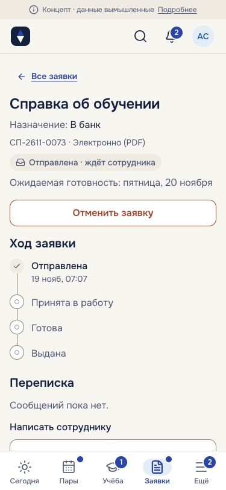
Мобильный проход после правки. В карточке СП-2611-0073 видно назначение.
Повтор с другим проверяющим
Второй независимый ИИ-проверяющий впервые открыл обновлённый кабинет в Chrome, 375 × 812 px.
Без подсказок он выполнил 3 из 3 заданий и открыл обе нужные карточки занятий. Справку
отправил за четыре нажатия, ещё за два снова открыл её из списка и сверил назначение, номер
и статус. Из карточки справки за два нажатия открыл «Учёбу» и микроэкономику. Проверил
расчёт 11,5 + 0,5 × 87 = 55. Оба прохода выполнили агенты. Сессии со студентами ещё
предстоят. Наблюдения —
docs/qa/first-visit.md, задания для студентов —
docs/submission/product-rationale.md.
9.6. Когда напоминание появляется в ленте
Дедлайн отвечает на вопрос «когда сдавать?». Если сдача через сутки, уведомление попадает в
ближайшее разрешённое окно дайджеста или в ленту сразу при выбранной настройке. Личный план
отвечает на вопрос «когда я начну?». Студент сам выбирает время и первое действие, поэтому
ждать следующего дайджеста не нужно. Для обоих видов действуют настройки категорий и тихие
часы.
Задание на контрольных часах, МСК
Первая проверка
После изменения
18 ноября в 10:00 составить план на 19 ноября в 10:00
План стал виден преждевременно, 18 ноября в 13:00.
В 09:59:59 19 ноября в ленте пусто для этого плана. В 10:00 появилась одна запись.
Составить короткий план на 10:04 текущего дня
План ожидал дайджеста в 13:00.
Запись доступна в 10:04, когда студент собирался приступить.
Сдать работу 20 ноября в 10:00
Ранее автоматического напоминания о сдаче не было.
19 ноября при обычном дайджесте запись доступна в 13:00, при настройке «Сразу» — в
10:00.
Время здесь означает момент, с которого запись возвращается при открытии или обновлении
ленты. В тихие часы напоминание переносится на разрешённое время. Если тогда план уже
закончится или сдача пройдёт, новую запись не показывают.
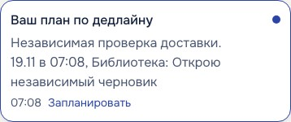
Та же запись при повторном открытии ленты. Фрагмент экрана шириной 390 px.
Как обновилась уже открытая вкладка
В отдельном проходе 19 ноября при работающей сети проверяющий нажал «Отметить всё
прочитанным» и оставил вкладку открытой. План начинался в 07:08:44 МСК. До начала в
ленте не было записи об этом плане. Спустя 0,178 с после начала плана сервер вернул одну
непрочитанную запись. В этом проходе открытая вкладка показала её через 14,229 с после
начала плана. Ручного обновления и переключения вкладок не было.
Открытая лента запрашивает обновления каждые 30 с. При закрытом приложении системный
сигнал на телефон в концепте не предусмотрен.
В исходной версии с ожиданиями совпали 15 из 30 контрольных точек, в первой исправленной —
все 30. Затем для отмены перенесённого плана уточнили одно ожидание и добавили новую точку.
По окончательным правилам совпала 31 из 31 точки. Проверили также повторную отправку и
переход через московскую полночь. Полная таблица —
docs/qa/reminder-acceptance.md.
10. Ограничения и что дальше
Данные и документы. Данные вымышлены, на страницах стоит пометка «Концепт», на
справках — водяной знак. Для внедрения нужны интеграции с вузом, вузовская учётная запись
и электронная подпись.
Проверка со студентами. На 16 ноября оставались 16 замечаний серьёзности 2. Часть
уже исправили, включая поиск в справочнике. В работе сотрудника предстоит проверить поиск
по очереди и сохранение длительности пары при смене времени начала.
Проверка на устройствах. После публикации повторить замеры скорости на физическом
телефоне и открыть стенд через операторов в РФ. Для этого нужны домен, хостинг, мониторинг
и резервная копия. Системные push-уведомления потребуют отдельной реализации.
Следующие возможности. Оплата обучения, английский язык и короткий опрос раз в
семестр. Последний рекомендовали авторы национального исследования
[R41].
Разработка. Разделить тестовую базу и стенд оценщиков, учесть токены и стоимость
фазы B. Чтобы измерить экономию времени от применения ИИ, нужен контрольный эксперимент.
11. Источники и авторство
Обозначения источников совпадают с приложением A спецификации. Первичные исследования, на
которые опираются ключевые решения, и пределы их применимости разобраны в файле
docs/submission/product-rationale.md.